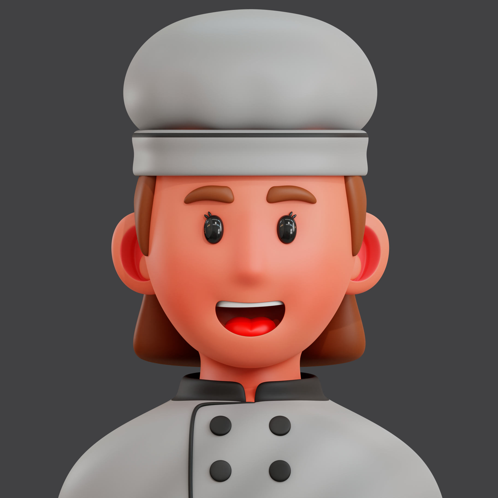

Titre
Le chef cuisinier est le responsable en cuisine du processus complet de confection des plats, des mets ou des repas d’une cuisine. Il travaille seul, ou assisté d’une brigade, équipe de cuisiniers ou de commis qui officient dans la technique culinaire sous ses ordres2. Il est souvent le cuisinier le plus expérimenté.>